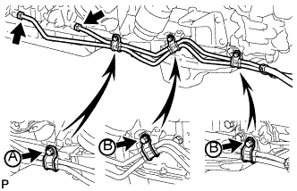

МАСЛЯНЫЙ РАДИАТОР > УСТАНОВКА |
| 1. УСТАНОВИТЕ ТРУБКУ МАСЛЯНОГО РАДИАТОРА № 2 В СБОРЕ |
Установите патрубок масляного радиатора № 2 и закрепите его 2 болтами.
| 2. УСТАНОВИТЕ ВПУСКНОЙ ПАТРУБОК МАСЛЯНОГО РАДИАТОРА № 2 И ВЫПУСКНОЙ ПАТРУБОК МАСЛЯНОГО РАДИАТОРА № 2 |
Подсоедините впускной шланг масляного радиатора № 2 и выпускной шланг масляного радиатора № 2 к патрубку № 2 масляного радиатора.
| *a | Метка, нанесенная краской |
| *b | Метка, нанесенная желтой краской |
| *c | Метка, нанесенная зеленой краской |
| *d | Метка, нанесенная синей краской |
| *e | Метка, нанесенная розовой краской |
Подсоедините 2 патрубка к радиатору, чтобы закрепить их, а затем проденьте 2 патрубка через зажим гибкого шланга № 1 и сомкните зажим.
| 3. УСТАНОВИТЕ ВПУСКНОЙ ПАТРУБОК МАСЛЯНОГО РАДИАТОРА № 1 И ВЫПУСКНОЙ ПАТРУБОК МАСЛЯНОГО РАДИАТОРА № 1 |
|  |
Подсоедините концы 2 патрубков масляного радиатора к соответствующим штуцерам патрубков масляного радиатора, предварительно закрепив их вручную.
Сомкните 3 зажима гибких шлангов № 2 и вверните 3 болта.
 |
С помощью разрезной головки закрепите патрубки масляного радиатора.
| 4. УСТАНОВИТЕ ВПУСКНОЙ ПАТРУБОК МАСЛЯНОГО РАДИАТОРА № 1 И ВЫПУСКНОЙ ПАТРУБОК МАСЛЯНОГО РАДИАТОРА № 1 |
Подсоедините впускной шланг масляного радиатора № 1 и выпускной шланг масляного радиатора № 1 к впускному патрубку и выпускному патрубку № 1 масляного радиатора.
| *a | Метка, нанесенная розовой краской |
Подсоедините 2 патрубка к трубке масляного радиатора № 2, чтобы закрепить их.
| 5. ОТРЕГУЛИРУЙТЕ УРОВЕНЬ ЖИДКОСТИ ДЛЯ АВТОМАТИЧЕСКОЙ ТРАНСМИССИИ |
Отрегулируйте уровень жидкости для автоматической трансмиссии (Нажмите здесь).
| 6. УСТАНОВИТЕ УПЛОТНЕНИЕ № 1 МЕЖДУ ФАРТУКОМ ПРАВОГО ПЕРЕДНЕГО КРЫЛА И РАМОЙ |
Закрепите уплотнение между фартуком переднего крыла и рамой 5 фиксаторами.
| 7. УСТАНОВИТЕ УПЛОТНЕНИЕ ФАРТУКА ПРАВОГО ПЕРЕДНЕГО КРЫЛА |
Закрепите уплотнение фартука переднего крыла 5 фиксаторами.
| 8. УСТАНОВИТЕ ЗАДНЮЮ ЗАЩИТУ КАРТЕРА ДВИГАТЕЛЯ В СБОРЕ |
Установите заднюю защиту картера двигателя и закрепите ее 4 болтами.
| 9. УСТАНОВИТЕ ЗАЩИТУ КАРТЕРА ДВИГАТЕЛЯ № 1 В СБОРЕ |
 |
Присоедините защиту картера двигателя к кузову автомобиля, как показано на рисунке.
Вверните 4 болта.